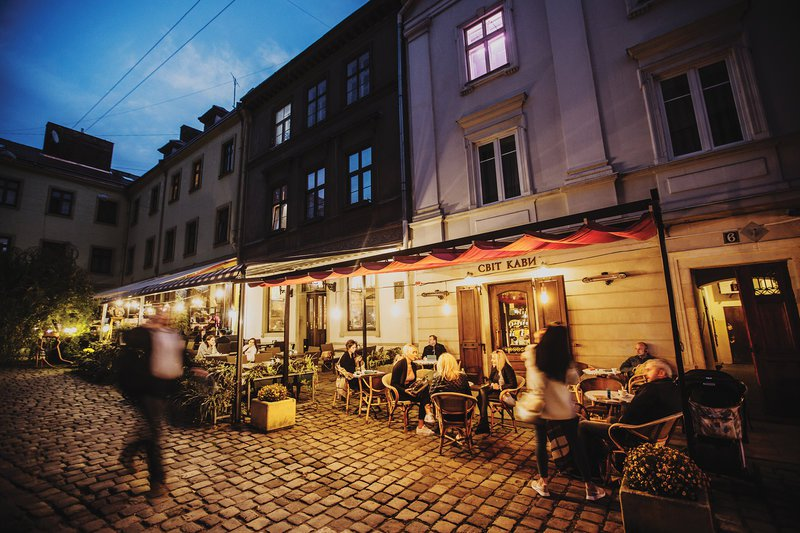

Кав'ярня Світ кави
Це історія однієї родини, яка змінила кавову культуру Львова.
Все почалося з мрії та маленької крамниці, де можна було придбати свіжообсмажені зерна додому та скуштувати те, що купуєш. З роками невеличкий заклад розрісся до чималої кав’ярні у три поверхи, в якій варять лише найкращі зерна арабіки, власного обсмаження. Також тут можна смачно поснідати та почастувати себе солодощами. Світ Кави – це місце, де життя вирує навколо горнятка кави. Тут львів’яни вирішують важливі справи, знайомляться, відпочивають, закохуються. Тут завжди пахне кавою та свіжою випічкою.
